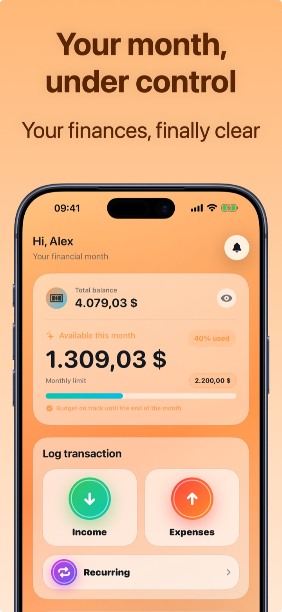

Personal finance: where to start
"I should take care of my finances" is one of the most postponed resolutions ever — usually because it seems to require an advisor's skills. The truth: 90% of the result comes from four simple habits. Here they are in order, with the first month's plan.
The 4 pillars, in order
1. Awareness: knowing where the money goes
Before optimizing anything you need to see the numbers: how much comes in, how much goes out, on what. Without this, every decision is made blind. Tool: expense tracking, two seconds per expense.
2. Budget: deciding instead of enduring
With 2-4 weeks of data you can set a realistic monthly budget (average spending − 10%) and, if you want a structure, the 50/30/20 rule. A budget turns "let's hope it lasts" into a plan.
3. Emergency fund: sleeping soundly
Goal: 3-6 months of essential expenses in a separate, liquid account. You build it with "pay yourself first": a fixed amount moved on payday, even a small one. It's the difference between a setback and a drama.
4. Goals: giving your savings a direction
A trip, a down payment on a house, paying off a debt: savings with a name resist temptation far better than generic savings. Only after this pillar does it make sense to talk about investing.
The first month's plan
| Week | What to do | Time |
|---|---|---|
| 1 | Track every expense, without judging. Just data. | 30 sec/day |
| 2 | List fixed costs and subscriptions; cancel the useless ones. | 15 min |
| 3 | Set your budget (average − 10%) and your automatic savings share. | 10 min |
| 4 | First review: the month's statistics, one single correction for next month. | 10 min |

The mistakes of the first months (avoid them)
- Starting with investments: without an emergency fund, the first setback forces you to sell at the worst moment.
- Overly complex tools: the spreadsheet with 40 columns lasts a week. Simple and daily beats complete and abandoned.
- Chasing perfection: forgetting an expense now and then doesn't invalidate the system. What counts is the trend, not penny-perfect accounting.
Start today with Crena (pillars 1 and 2)
- Download Crena for free: no account, your data stays on your iPhone.
- From today, log every expense in two seconds (frequent ones with one tap from the widget).
- Put salary and fixed expenses in Recurring: from tomorrow they log themselves.
- After 2 weeks look at Statistics and set your first monthly budget.
- Every Sunday, 2 minutes of review. After a month you'll know exactly where your money goes — and that's the pillar everything else is built on.
Frequently asked questions
Where do I start if I'm at absolute zero?
How much time does personal finance take?
When does it make sense to start investing?
Try Crena for free
Expenses in two seconds, monthly budget and clear statistics. No sign-up and no bank account linking.
Download on theApp Store